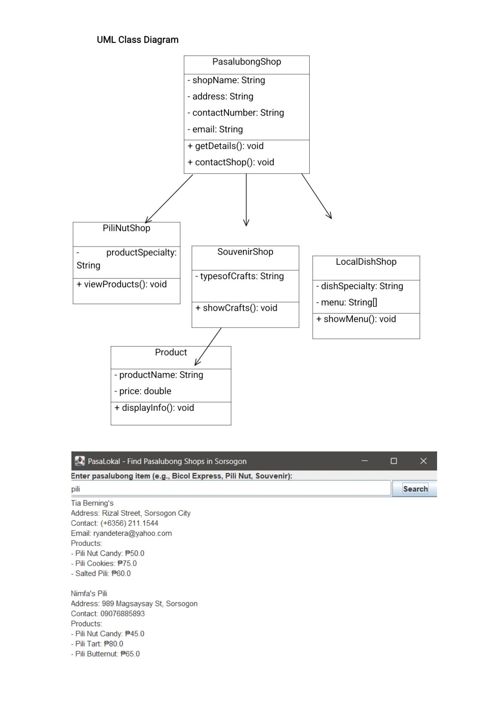
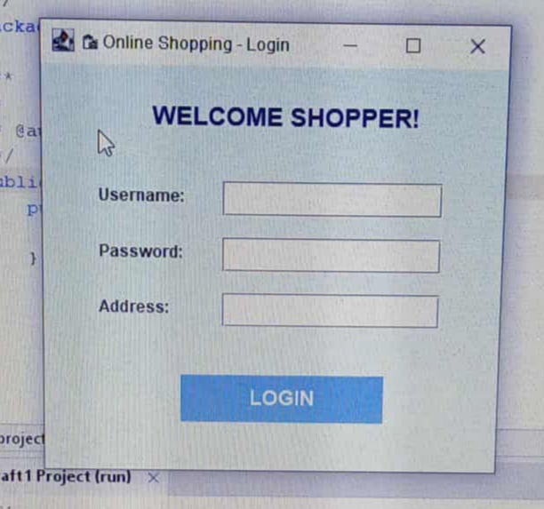

Hello! I'm Janica
Name: Janica Dejumo
AGE: 19
Location: G.Del Pilar Bulan Sorsogon
Who am I? I am a person who carries all the challenges that come into my life. I am someone who always communicates and interacts with the people arounds me. I have always been driven by curiosity. I embrace new experiences and challenges that shape my personal and academic growth. These experiences have not only helped me build a strong foundation, but they have also strengthened my problem-solving, adaptability, and critical thinking skills. My personality is I am friendly, patient, understanding and kind especially to the people who are kind to me. My goal as an IT student is to improve my programming and technical skills. I want to learn different programming languages and understand how systems and software work. In the future, I want to become a successful IT professional who can create useful and innovative technology that helps people.
Education Journey:
G. del Pilar Elementary School
Bulan National High School
Sorsogon State University Bulan Campus
Hobbies: I enjoy exploring new things in my free time. I love outdoor adventures, I am passionate about traveling, and I enjoy listening to music, which helps me relax and unwind.
Favorite Quote:“I’m feeling lazy. I’ll just do it later.(even when the deadline is near.)" MATATAPOS MAN YAA."
HTML
CSS
JavaScript
Description: PasaLokal is a user-friendly mobile application designed to help tourists in Sorsogon easily find authentic pasalubong shops. The app provides a convenient way to locate stores that offer local delicacies, handcrafted souvenirs, and other culturally significant products. By guiding visitors to small local businesses, PasaLokal not only enhances the overall travel experience but also supports community livelihoods and helps preserve the cultural identity of Sorsogon. This paper offers a brief overview of the app’s design, its key features, and its purpose in promoting tourism and strengthening local trade.
Tools Used: Programming Language: Java, Modeling: UML for class diagram, IDE: Eclipse

Description: Online shopping login is the process where users enter their registered email or username and password to access their personal shopping account on an e-commerce website or app. Logging in allows customers to view their saved items, track orders, manage payment methods, and enjoy a personalized shopping experience.
Tools Used: Apache Netbeans IDE

Email: janicadejumo24@email.com
Phone: 09634198151